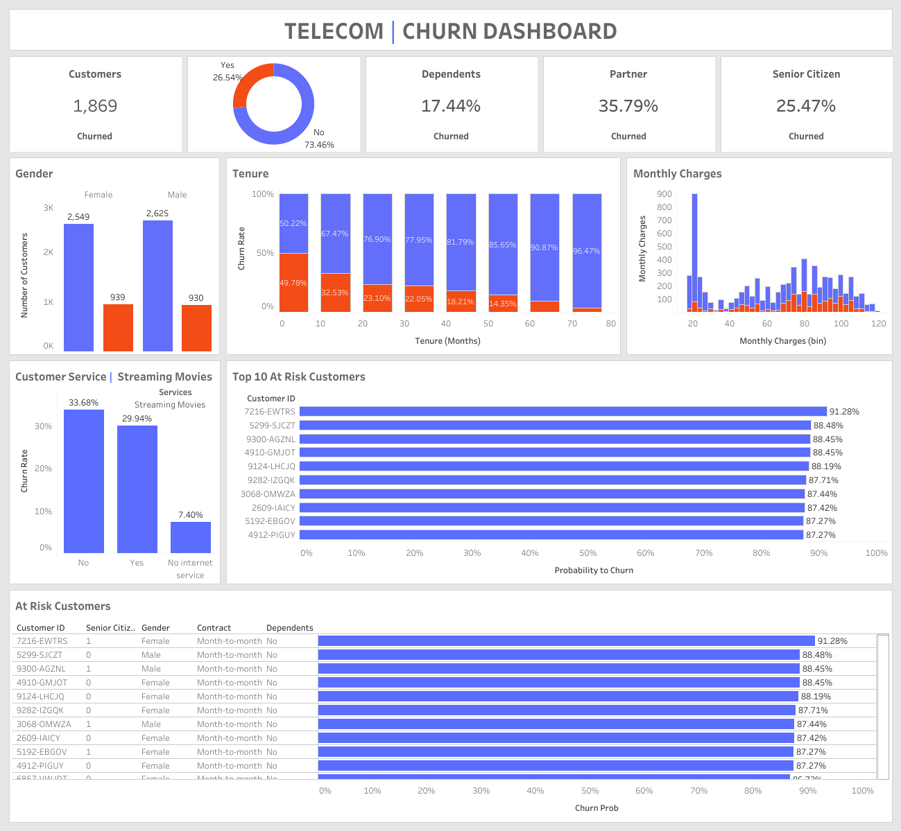

Classical Machine Learning Projects
Telecom Churn Analysis and Prediction
This repository contains the code for analyzing telecom churn rate. The aim of this project is to predict whether a customer will churn or not based on various features. In this project, we analyzed the telecom churn rate using various machine learning algorithms. The best-performing model was XGBoost with an accuracy of 81.92%. We also performed SHAP analysis to interpret the XGBoost model and found that MonthlyCharges, Tenure, and InternetService_Fiber optic were the most important features in predicting churn. Tableau Dashboard
Credit Card Default Web App
This project was created to predict credit card defaults based on customer profiles, achieving a high ROC AUC score of 0.7882 The model analyzes borrower information, such as age, income, and financial indicators, to identify customers at risk of defaulting. This project also contains a streamlit web app capable of making predictions given a customer profile. Steamlit App

Allstate-Claims-Severity
This repository features code for the Allstate Claims Severity Kaggle competition, utilizing Python, primarily XGBoost, and LightGBM for predicting insurance claim losses. Through preprocessing and hyperparameter tuning, LightGBM attains the best validation MAE of 0.4157, selected for test dataset predictions and competition submission.